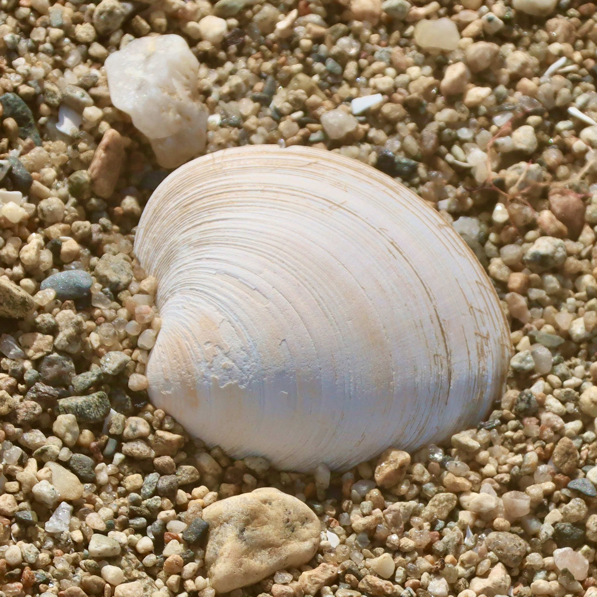

My Research
Nutrition-sensitive management of coral reef fisheries
Coral reefs support millions of fishers and provide ecosystem services such as food production and shoreline protection to over a billion people, most in tropical developing countries (Sing Wong et al., 2022). While working for the Jesuit Justice and Ecology Network Africa in Nairobi, Kenya, I studied the relationship between fishery management, ecological function, and production of nutrients for human consumption in the artisanal coral reef fisheries of the Western Indian Ocean (Galligan, McClanahan, et al., 2022). We found that traditional management measures, such as modifying gears and restoring reef fish biomass, can increase nutrient yields from fisheries without compromising the nutritional quality of the catch.

Hypoxia and predation on a commercially fished bivalve in Narragansett Bay
Northern quahogs (Mercenaria mercenaria) sustain around 500 small-scale fishers, provide important ecosystem services, and are of great cultural importance in my home state of Rhode Island, U.S.A. However, as Narragansett Bay becomes more oligotrophic and experiences fewer episodes of hypoxia due to improved wastewater treatment, trophic relationships are changing in space and time. I collaborated with researchers at Loyola University Chicago and the Rhode Island Division of Marine Fisheries to study the impacts of these changes on Narragansett Bay quahogs and found evidence for a hypoxia-induced predation refuge that is becoming less influential as water quality improves (Galligan, Stuart, et al., 2022).


Integral ecology
As a Jesuit in formation to be a Catholic priest, I am deeply inspired by the thought of Pope Francis, who writes (2015, no. 139):
“We are faced not with two separate crises, one environmental and the other social, but rather with one complex crisis which is both social and environmental. Strategies for a solution demand an integrated approach to combating poverty, restoring dignity to the excluded, and at the same time protecting nature.”
My own “integrated approach” has meant incorporating ethical reflection and advocacy alongside scientific research. It also motivates me to work with marginalized communities and produce the kinds of knowledge that will serve their needs. For a full explanation of what integral ecology can look like as a research method, see the briefing note I developed in collaboration with a colleague at the Laudato Si’ Research Institute at the University of Oxford (Zepeda & Galligan, 2023).